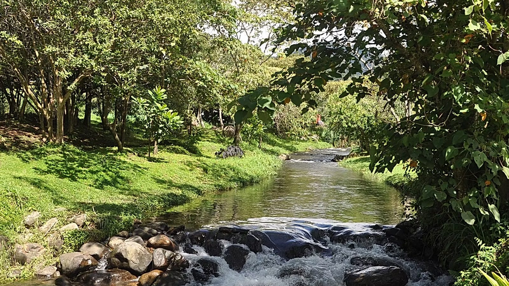

Manteniendo, mejorando y embelleciendo el Parque Biblioteca de Boquete
DonarAmigos del Parque recibe donaciones para mantener, mejorar y embellecer el Parque Biblioteca Boquete, de financiación privada.
El Parque invita a todos los visitantes a disfrutar de recreación inspirada en la naturaleza, educación ambiental y reflexión tranquila.
Inclusivo: Mantendremos las puertas del Parque abiertas para todos aquellos que salvaguarden su belleza.
Filantrópico: Vemos el Parque como un regalo para Boquete y continuaremos atrayendo donantes generosos para mantenerlo en evolución.
Inspirador: Inspiramos a los visitantes a proteger el entorno natural que hace que Chiriquí sea tan excepcional.
Educativo: Brindamos oportunidades para aprender sobre la naturaleza, los ecosistemas y el cuidado del medio ambiente.

Amigos del Parque se dedica a recaudar fondos tanto para mantener el Parque como para ayudarlo a desarrollarse y crecer.
Amigos del Parque Boquete reconoce los beneficios educativos del Parque y se esforzará por mantener esto como una máxima prioridad.
Amigos del Parque Boquete organiza grupos de voluntarios para ayudar cuando sea necesario, para garantizar que el Parque prospere.
Descubre cómo tu apoyo ha ayudado al Parque a crecer y prosperar durante el último año.
Hay muchas formas de apoyar al Parque —
echa un vistazo a nuestra página "Cómo Ayudar" para saber cuál se adapta mejor a ti.